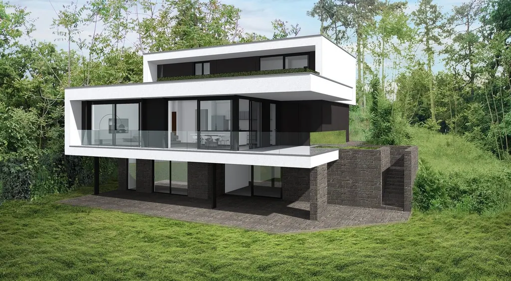

Így válasszunk építészt!

Az épitész nem tervet készít pusztán. Az otthonunkat álmodja meg, Ő az életterünk megformálója. Karmesterként vezényli a folyamatot az első beszélgetéstől a költözésig. Inspirál, kérdez, elgondolkodtat aztán meglep. Támogat, felvilágosít, ha kell szembesít, cáfol. Mindezt úgy teszi, hogy élvezzük az “utazást”… Mert a jó építésszel szárnyalunk, míg végül az otthonunkba érkezünk.
Mit várhatunk a tervezőtől?
Tekintsünk úgy az építészre, mint egy karmesterre, aki levezényli az általunk elképzelt épület megalkotását – fogalmazza meg szakmája lényegét Kertvéllesy Gábor építész. A kívánságainkat, lehetőségeinket úgy bízzuk rá, mint egy zeneművet, amit egy közös munka során a nekünk legmegfelelőbb formában láthatunk megvalósulni. Fontos, hogy előre tisztázzuk magunkban, mire van szükségünk, ennek ismeretében kezdhetjük el feltérképezni a számos építész irodát. Tisztázzuk, hogy mit várunk az épülettől, a belső tértől és ne feledjük, üzenetet közvetítünk vele magunkról. A tervező szerepe ugyanis nem csak az, hogy kitalálja a nekünk megfelelő épületet vagy tereket. Az üzenete megfogalmazásában segít, miközben egy olyan életteret hozunk létre a közreműködésével, ami igazán minket tükröz. Amiben igazán jól érezzük magunkat.
A személyes kapcsolatra építhetünk.
Kiindulhatunk az ismerőseink ajánlásaiból, és rengeteg építészt megtalálhatunk az interneten, áttekinthetjük a referenciáikat. Elengedhetetlen azonban a személyes kapcsolat, a megismerkedés. Különösen fontos ez, ha egy otthon megtervezéséről van szó. Bensőséges viszonyt, valódi ismeretséget fogunk kialakítani, enélkül aligha tudna ráérezni kik vagyunk, milyen élettérben érezzük jól magunkat. Olyan szakembert válasszunk, aki akarja és tudja is feltenni akár a legszemélyesebb kérdéseket is, feltárva az igényeinket. Hiszen neki kell majd az elképzeléseinket integrálnia a saját szaktudásával és tapasztalataival, hogy végül egy stílusos, jól funkcionáló épület (tér) szülessen, ami a számunkra leginkább megfelelő.
A listától az ajánlatig
Mindkét félnek időt és energiát kell szánnia az ismerkedésre és a kiválasztásra. Egy családi házhoz akár három-öt építésszel is elkezdhetünk ismerkedni, és ebből két-hárommal eljutni a részletekig, az ajánlatkérésig. A személyes találkozóknál segít, ha az elképzeléseinket előre (például elhelyezkedés, költségvetés, időterv) írásos formában összeszedjük. Így könnyebben találjuk meg azt a szakembert, akivel már akár a telek kiválasztásánál együtt dolgozhatunk. Az építésszel, aki valóban együttműködik velünk, tisztázni tudjuk, mit és mikorra szeretnénk megvalósítani, majd ennek egy ütemezett, feladatokra lebontott menetrendjével szolgál számunkra. Mert hiába kapunk kreatív elképzeléseket, szuper ötleteket, ha a folyamat végeláthatatlanul elhúzódik.
Ha úgy érzed van már Építészed, bízz benne, és Benne bízz, ha ez nem így van, nincs még Épitészed.
A tervező kiválasztásánál ne várjunk átütő sikert az első találkozáskor. Teljes megértés és kölcsönös bizalom kell, hogy kialakuljon, ehhez pedig valószínűleg több lépcső vezet majd. Vannak ügyfelek, akik a beszélgetések során jutnak el ide, másoknak inkább a referenciák áttekintése fontos. A lényeg, hogy érezzük: a megrendelő elfogadja a tervezőt, az építész pedig érti, mit szeretne az ügyfele. Ha úgy érzed van már Építészed, bízz benne, és Benne bízz, ha ez nem így van, nincs még Épitészed.
A legjobb lenne beköltözni…
Jó jel a tervező részéről a megismerés szándékaként, ha például olyan kérdéseket kapunk, hogyan szokott reggelizni a család, vagy ki mikor érkezik haza délután, milyen gyakran fogadunk vendégeket. Akarnia kell megismerni minket, a szokásainkat, ahogy működünk…
Régen még azt tanították az építészeknek, hogy a legjobb lenne kicsit beköltözni az emberekhez, mielőtt tervezni kezdenek nekik. Ez a modja a megismerkedésnek nyilván nem reális. Ezzel együtt a megismerés elengedhetetlen feltétele a sikeres megvalósításnak. Vegyük figyelmeztető jelnek, ha az építész nem hajlik arra, hogy személyesen találkozzon, megelégedne egy ajánlat elküldésével. Így aligha tud kialakulni a szükséges kölcsönös bizalom. Az együttműködésünk pénzben és időben kifejezhető lefutásáról már az első találkozás során sem tabu beszélni, hiszen fontos éreznünk, nem kizárólag az építészet terén leszünk jó kezekben, hanem gazdaságilag is…
Együtt vigyük végig!

A bekért ajánlatok kidolgozottsága nagyon informatív. A Kertvéllesy Építész Iroda minden ajánlatot úgy küld ki, hogy abban szerepelnek a tervi elemek tematikusan és időrendben. A tiszta, egyértelmű áttekinthetőseg nélkülözhetetlen a bizalomhoz. Ehhez határidők, tartalmak, teljesítések tartoznak – egy ilyen sorvezetőhöz a tervezési folyamatban minden szereplő igazodni tud. Ha ilyen szinten bevon minket a tervező a folyamatba, akkor tudhatjuk, komolyan vesz bennünket, tisztaságot sugall így bizalmat ébreszt.
A bizalom pedig mindkét irányban kell, hogy működjön. Amikor kiválasztottuk a tervezőnket, utána hozzá forduljunk minden kérdéssel. Szabad, sőt érdemes kutakodni, informálódni a neten bármiről de bizalmasunk, mint épitész egy legyen csak!
Bizalom, profizmus (korrekt szakértelem), idő és rugalmasság. Mindkét fél részéről fontos alapelemei a sikeres együttműködésnek.
írta: Kertvéllesy Gábor
A fenti cikk megjelent partnerünk, a Lakáskultúra Magazin 2020 márciusi számának Szerviz rovatában.